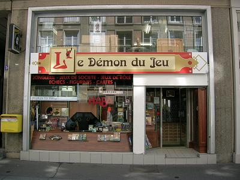
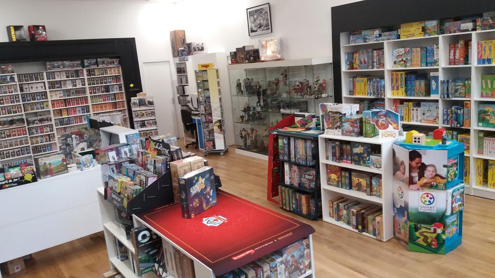

<div id="more" class="row no-gutters">


<div class="card mb-3 col-md-12 col-lg-12" >
  <div class="row no-gutters">
    <div class="col-md-5">
      <div class="card-body w-100">
      
      <div class="rem"></div>
      
      </div>
    </div>
    <div class="col-md-7">
      <div class="card-body w-100">
      <h3 class="card-title text-center">Ma boutique</h3>
      <div class="rem"></div>
        <p class="card-text text-justify"><br />Plus ancienne Boutique de Jeux de Haute-Normandie, fondée en 1986, nous nous efforçons toujours de vous conseiller au mieux, de vous aiguiller sur le choix du jeu qui vous donnera entière satisfaction. Rapide, Convivial, riche, tels sont les caractéristiques qui déterminent les bons jeux de société actuels.<br /><br />
        Oubliez les jeux de votre enfance et venez découvrir les nouveaux produits !<br /><br />
        Le Démon du jeu (audemondujeu.com étant son entité virtuelle) a été créé par un passionné de jeux de société dits "modernes" destinés à un public adulte recherchant des activités de réflexion et/ou de détente, bien plus enrichissants et passionnants que les produits disponibles en grande surface.<br /><br />
        Les jeux de société que nous vous proposons sont rarement proposés dans les réseaux de distribution classiques et pour cause ! Ils sont développés par de petites maisons d’éditions spécialisées, en collaboration avec les plus grands auteurs de jeu du monde entier. Nous vendons des jeux d’auteurs (le dernier Cathala, le prochain Fred Henry, etc…) à la grande différence des jeux commerciaux que vous retrouvez dans les grandes enseignes sans signature distincte. Nos produits vous permettront de découvrir ou de redécouvrir le plaisir de jouer ensemble, et de se retrouver en toute convivialité.<br /><br />
        Comme toujours, nous prenons grand soin de développer et d’améliorer nos gammes et articles. Ainsi, notre offre concernant les 2-7 ans ne cesse de croître, notamment avec la distribution des produits Haba ou Djeco.</p>
        <p class="card-text"><small class="text-muted"></small></p>
      </div>
    </div>
  </div>
</div>

</div>
